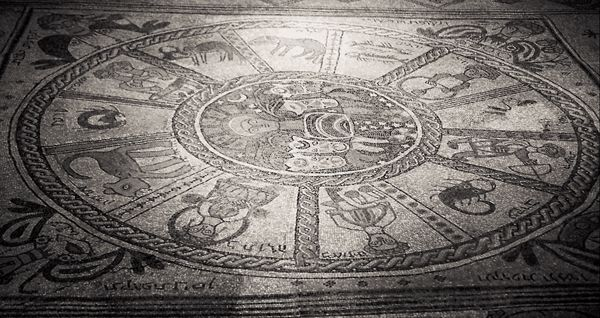
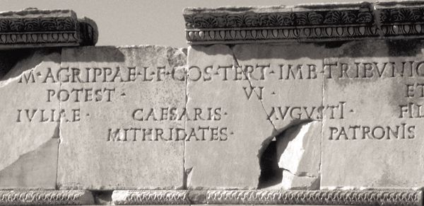

Paul and the Christians at Colossae: Colossians and Philemon
Although only one Pauline letter is specifically addressed to Christians in the city of Colossae, it is evident from the overlap of names with Colossians that Philemon was also written to Christians in that place. For that reason the two letters will be treated together. Because they differ enough in scholarly estimates of authorship and the like, however, Colossians and Philemon still need to be treated as independent letters.
The city of Colossae, along with Laodicea and Hierapolis, was situated in the Lycus River valley some 110 miles east of Ephesus. Although at one time Colossae had been the most important of the three, well known for its industries of wool-working and cloth-dying, by the mid-first century, and so by the time these letters were written, it was the least important of the three. Ancient records indicate it was devastated by an earthquake around 60 CE, and it apparently never recovered as a thriving metropolis.
In addition to the indigenous population of the area, there is evidence to indicate that a considerable number of Jews also lived there. The language in Colossians itself, however, indicates that it was addressed primarily to Gentiles (2:13; this also seems to be indicated by 1:21, 27; and 3:6), in keeping with Paul’s mandate from the conference in Jerusalem with Peter, James, and the other disciples (Gal 2:9).
17.1.1. The Letter
The letter opening (1:1–2) is brief and indicates that, unlike the situation in Corinth or the Galatian churches, Paul’s own authority is not being questioned in Colossae. As here, Paul often mentions Timothy, one of his regular companions on his missionary journeys, as a co-sender of his letters (2 Cor 1:1; Phil 1:1; 1 Thess 1:1; 2 Thess 1:2; Phlm 1). The wish for grace and peace is also typically Pauline.
Also typical is Paul’s reference to his prayer on behalf of the readers, although in this instance it is difficult to determine where the prayer ends and the letter body begins. The kind of discussion that normally characterizes the opening of the letter body is underway in 1:13, and hence one might see the letter body beginning with 1:9. Yet that verse and the two or three following it continue the discussion of Paul’s prayer on behalf of the Colossian Christians. The form of the letter is typical for Paul — letter opening, prayer, letter body — though difficulties arise when one tries to be precise in determining the limits of each part. Perhaps it would be best simply to note that the content of Paul’s prayer leads into the discussion contained in the letter body, without trying to pinpoint too precisely where the one ends and the other begins. Paul could clearly adapt the forms to serve the functions he wished those forms to perform.
Paul leads into his discussion in the letter body by taking up the last phrase in the prayer, namely, the thanks to the Father who has qualified the Colossian Christians to share in the inheritance of those in the light (1:12). The reference to the Christians having been delivered by God from the kingdom of darkness into the kingdom of the Son (v. 13) sets the stage for the remaining discussion in the letter, which concerns itself with both the intellectual and the moral consequences of having been delivered from the “dominion of darkness.” Such a radical shift has apparently been difficult for the Colossian Christians to absorb completely, and this letter is an attempt to spell out the consequences of that shift.
The discussion begins with a hymnic explication of who Christ is (1:15–20). It is formed of two parallel strophes (vv. 15–18a and 18b-20). The first strophe delineates Christ as the image of God and the firstborn of all creation, that is, the agent of creation. The second delineates Christ as the first principle of reality and the firstborn from the dead. Some have suggested that because of this kind of parallel structure, this may be an early Christian hymn or confession that Paul quotes to demonstrate to his readers that he and they in fact share the same Christian faith. Whether Paul is quoting exactly an earlier hymn, has adapted it, or even wrote it for this letter, his use of it here clearly shows that he subscribed to its content, so in the end its origin is of less importance than what it says to the Colossians by way of confirming the nature of their faith.
The first strophe is remarkably similar to the kind of description of Christ found in the prologue of the Gospel of John (see especially John 1:1–3). In both instances, the concept seems to reflect Hebrew thinking about a kind of personified Wisdom, who assisted God in the creation of the world (see, e.g., Prov 8:22–30). The first strophe is at pains to point out that there is no order of reality, visible or invisible, natural or supernatural, that was not created through the agency of Christ (Col 1:16). This means that, apart from Christ, the whole of creation would have no coherent center and would fly apart or revert to the chaos from which it emerged (1:17). Christ is thus not only the agent of creation, he is also the agent of the world’s preservation.
It is precisely with that head of all creation, namely Christ, that the Colossian Christians have to do in the church. The church, in its turn, is nothing less than the body of which Christ is the head (1:18a). The implication, to be spelled out in detail below, is that when one therefore is a member of that body, one has no need to fear or propitiate any other spiritual being, whether angelic, astral, or demonic. Since Christ is head over all of them, to follow Christ is to be delivered from any power such beings might exercise.

A floor mosaic in the sixth-century-C.E. synagogue at Beit Alpha depicting the sun-god Helios in his chariot surrounded by four women representing the seasons, symbols of the twelve signs of the zodiac, and Hebrew and Aramaic names for the months (Phoenix Data Systems, Neal and Joel Bierling)
The second strophe (1:18b-20) deals with the preeminence Christ has because of his resurrection from the dead. He is thus not only the agent of creation and preservation but also the principal reality in the re-creation of reality at the turn of the ages. As the firstborn of the dead by his resurrection, he is head not only of created but also of re-created, and thus redeemed, humanity. This is possible because in Christ the whole fullness of God is present; to have to do with Christ is therefore to have to do with God himself. If all things cohere in Christ (1:17), then, because of his death on the cross, all things are also reconciled in him (1:20). Thus at the center of created and re-created reality stands the figure of Christ, all powerful because of his unique relationships to God and to all created reality, which owes its present coherence and its future peace to who this Christ is and what he has done.
Paul now makes his first application of the points in the hymn to the Christians in Colossae (1:21–2:7). It is precisely because of what Christ, the very embodiment of God, has done to reconcile all reality on the cross that the Colossians themselves have now been brought into a new reality, a new relationship with Christ and therefore with God (1:21–22). To remain in that new reality through continued trust in Christ is of paramount importance for the Colossian Christians, lest they fall back into the evil and darkness of their old way of life (1:23). The remainder of this first segment of the letter body continues with a variety of exhortations to the readers to remain faithful to Christ. Apparently some people would like to persuade the Colossians to abandon their newfound faith (2:4), and so Paul writes to help the readers resist any falling back into the old ways.
The second segment of the letter body (2:8–23) returns to the theological implications of the primacy of Christ in creation and re-creation, with which Paul dealt in the opening hymn. These verses seek to counter the theological and moral problems confronting the Colossian Christians, the so-called “Colossian heresy.” Unfortunately, Paul is not as specific about this “heresy” as we would like. He did not, of course, have to spell it out, since obviously the Colossians knew what it was, and he alludes to it only enough to combat it.
From what Paul says, though, it is apparent that those against whom he is writing were arguing that more was needed for one to come to terms with the forces that ruled the world than simple adherence to Christ. The “elemental spirits” of the universe, who were apparently seen as the building blocks of reality, had somehow to be appeased. One way of appeasing them was circumcision (2:11) and submission to certain legal demands, including food laws and celebration of various festivals (2:16; see also 2:20–21). In addition, it was apparently necessary to practice self-abasement (2:18, 23) and to offer worship to angelic powers (2:18), perhaps lest one in the first instance call attention to oneself and, in the second, arouse the wrath of these supernatural beings. Some of this might remind one of the problems Paul had with the Judaizers in Galatia and Philippi, yet the worship of angels played no part in Jewish ritual and the legal demands seem tied to subordination to the elemental forces of the universe (2:20–21) rather than submission to the law of Moses. It may be that the Colossians confronted a religious amalgam made up of parts of Judaism and parts drawn from the worldview that permeated the Hellenistic world, with its fear of malevolent astral powers that would wreak havoc on the unwary.
Some have suggested that the Colossians confronted what was later known as Gnosticism, which emphasized salvation through knowledge of the nature of reality and of the way the human person fits into that reality. Yet the earliest Gnostic systems of which we have knowledge did not flourish until the first third of the second century and even then did not contain all the elements mentioned in Colossians, such as the need to be circumcised. Some have proposed a kind of Jewish Gnosticism, but we know of no such phenomenon.
Whatever the origin of this “heresy,” it is clear that it argued that one needed to do more than just trust in Christ if one was to survive in a world dominated by powerful supernatural forces. One needed somehow to propitiate those forces. Against this, Paul argues for the total sufficiency of Christ. By sharing in Christ’s death and resurrection in baptism, Christians are taken out of the realm in which the elemental spirits exercise dominion (2:20). Thus Christ has, through baptism, provided Christians with all the protection circumcision could provide (2:11–12). Indeed, by his death and resurrection, he has defeated all other supernatural powers as surely as a Roman emperor has defeated the enemies he brings back to Rome and parades through the streets before their execution (that is the figure called forth by the language of 2:15). The Colossians are free to ignore this “heresy,” with its calls for further acts needed to protect a person from the depredations of evil supernatural powers, because Christ, working in the full and embodied power of almighty God, has in fact become ruler over all other powers that exercise any kind of rule in any portion of reality (2:9). Relation to Christ is quite literally relation to Almighty God, and hence any need to worry about any other spiritual powers, malevolent or otherwise, is rendered irrelevant.
In a transitional paragraph (3:1–4) Paul moves from the theological implications of God’s activity in Christ to the ethical implications of that activity. Participation in Christ’s death and resurrection means that the Christian is delivered from any concern about earthly realities, that is, about anything existing in the created sphere, which includes all supernatural as well as natural forces. Christians are free to concentrate on the heavenly realm, that is, the future, rather than on the created realm, which belongs ultimately only to the past.
Therefore, Christians are now free to cast off all remaining earthly elements of their lives that bind them to that past (3:5). What that means Paul spells out in the next segment of the letter body (3:5–4:5). The first half of this segment (3:5–17) emphasizes the kind of behavior that must now characterize the Christian community, which has as its primary orientation the future and the new reality God has introduced that leads to that future. Such activity must be different from that followed by the Colossian readers before they became Christians. Their former activity is still bound to the old age, which is doomed to be destroyed when God’s new reality comes, and therefore must now be avoided (3:5–11). The word the RSV translates as “nature” and the NRSV as “self” (“old nature/self” in 3:9, “new nature/self” in 3:10) is the Greek word meaning “human being.” What is described is the “old” and “new humanity,” the point being that as persons develop within the structure of the Christian faith, they have the opportunity, now that sin’s hold has been broken, to become new human beings, with a human nature renewed now in the true image of their Creator. The image of God, lost to Adam in his rebellion against God (the “fall”), can now be recovered and restored because of the new reality God has introduced into the world with the death and resurrection of Christ. That is why the church is so central for Paul’s theology: it is the new community that can begin to reshape a humanity previously warped and corrupted by sinful rebellion against God.
Paul describes the activity of that new community in 3:12–17. Two general guidelines for conduct are enunciated and explicated. One is that all things are to be done out of love (3:14). One ought not confuse “love” here with emotional states. Christian love, as made concrete in Christ, is action for the good of another, regardless of how one may feel emotionally toward that person. That is why Jesus could tell his followers, “Love your enemies.” God’s love for sinful humanity was not emotional warmth so much as action for the benefit of human beings, namely, the sending of his own Son to die for sins.
The second guideline Paul enunciates here is the need to do everything one does in the name of Jesus Christ, by whose self-sacrificing love the new reality has been brought into being. This guideline suggests that if one cannot perform an act in the name of Jesus, one ought not to do it. This is simply the other side of the principle that Christians are to do everything out of love. To speak or act in the name of Jesus means one can also give thanks to God by those words or deeds. What therefore cannot be done in thankfulness to God ought also to be avoided.
In practical terms this means that all distinctions carried over from the old way of life are now rendered obsolete in the community shaped by the new reality. Race and social status had importance in the social order dominated by rebellion against God, but in the new social order dominated by Christ’s self-sacrificing love such distinctions have no place (3:11). The new humanity, with its restored image of its Creator, makes no invidious distinctions with respect to birth or social status. In Christ, all people stand on the same footing before God: forgiven sinners living in harmony with one another.
While there are no distinctions in status, there are distinctions in function, and it is to those that Paul turns in the final portion of the letter body (3:18–4:6). In brief compass Paul outlines the proper stance of the various members of the Hellenistic household (3:18–4:1). In each case, as in Ephesians but here in shorter form, the emphasis is that actions be undertaken and performed within the overarching need to remain faithful to God. And, again as in Ephesians, all are reminded of their responsibilities, not only those who in the Hellenistic world were assumed to be subordinate (wives, children, and slaves) but also those who were accorded dominance by the customs and civil codes of the times (husbands, parents, and masters).
Wives are to function within the ordering of the family (“be subordinate”) in a way that is appropriate to their participation in the new community of faith (“as is fitting in the Lord”). Husbands are to fit into the family order by loving their wives, with all that means in a Christian context regarding self-sacrifice for the good of others. Children are to obey their parents within the structure of the Christian family, as parents are to require such obedience in a way that does no harm to the children. Slaves especially are to carry out their duties within the structures of the new reality brought by Christ; three times Paul emphasizes that their service to their eternal Lord provides the structure for their useful obedience to their earthly masters. Those masters must also remember that they have their own Master in heaven, who provides the model for treatment of all people, slave or free. Paul concludes with some admonitions appropriate for all members of the Christian household, emphasizing the need for constant prayer as well as for appropriate conduct toward those outside the Christian community (4:2–6).
The letter closing (4:7–18) contains some fairly lengthy greetings to the readers from persons who are with Paul. Tychicus, named first, is apparently the one who is to deliver this letter. It was customary in the Greco-Roman world for the bearer of a letter to expand on its contents and answer any questions the recipients might have about the letter or the situation of the sender (so 4:9b). Onesimus is to accompany Tychicus; he was a member of the Christian community in Colossae. His return may be linked to events recorded in Paul’s letter to Philemon.
Paul next mentions three Jewish Christians who share in the mission to the Gentiles that has been entrusted to Paul. The phrase Paul uses to describe them (literally, “from the circumcision”) is also used in Gal 2:12 of the group that caused the separation between Jewish and Gentile Christians at Antioch. That now some members of that group accompany Paul in his own missionary travels may be indicated by that language, but use of the same phrase may also simply be fortuitous. Aristarchus is evidently imprisoned with Paul. Mark was a cousin of Paul’s onetime companion Barnabas. Mark (also called John or John Mark) had evidently deserted Paul and Barnabas during a missionary journey, and as a result of Barnabas’s wish to take Mark on another journey, Barnabas and Paul had a falling out (Acts 15:36–39; cf. Acts 13:13). From then on Paul and Barnabas conducted separate missions. Evidently there had been a reconciliation between Mark and Paul, as evidenced by his presence with Paul when this letter was composed, and Paul can now instruct the Colossian Christians to receive Mark if his journeys take him to Colossae. The third of these Jewish fellow missionaries is Jesus, surnamed Justus. All three obviously are in sympathy with Paul’s mission, since Paul identifies them as a comfort to him (4:11).
Epaphras, like Onesimus, was also a member of the Christian community at Colossae and was evidently the one in Paul’s missionary party who had evangelized Colossae, and perhaps Laodicea and Hierapolis as well (4:13). The “beloved physician” Luke and Demas, also with Paul at this time, also send greetings. Whether this Luke is also the author of the Gospel that bears that name is by no means certain, since names were attached to the Gospels only many years after they were written. The same would be true of any connection between the Mark mentioned earlier and the Gospel bearing that name.
Those to be greeted include a Nympha who evidently owns a house large enough to accommodate a congregation that meets there. From the language it appears that her house is located in Laodicea and that Paul knows her personally. In that case, while Paul had never visited Colossae, he may in fact have been to Laodicea. Be that as it may, he evidently had also written a letter to the Christians there, and he instructs the Colossian Christians to exchange letters with the community at Laodicea. Unfortunately, that letter to Laodicea has been lost. What ministry Archippus was to fulfill was obviously known to him, but we cannot determine what it was from the scanty information contained in this letter. The mention of Archippus as one of the receivers of Paul’s letter to Philemon, however, may give some hint, as we shall see when we turn to that letter. Paul closes this letter with a greeting written in his own hand, as he also did in Galatians (6:11), 1 Corinthians (16:11), and 2 Thessalonians (3:17). He also writes such a phrase in Philemon (v. 9), but for another purpose.
Paul does not refer to an impending visit to his readers, as he did in his letter to the Philippian Christians. This is strange, since Paul does tell Philemon, who apparently lived at Colossae, that he will in fact come to visit him (Phlm 22). But omission of any mention of a visit is appropriate if Paul was not the author of Colossians. The purpose of the letter was evidently to encourage the faith of the Colossian Christians and to emphasize to them the cosmic significance of Christ, thus obviating any need to embellish their faith with additional rituals or elements of belief. That purpose could be accomplished without reference to an impending visit by Paul.
That Paul is the author of the letter has been challenged on both linguistic and doctrinal grounds. The author of the letter was unknown to the Colossians in person (1:4, 6–7; 2:1) as also to the Christians in Laodicea (2:1). Evidently some of Paul’s followers had established Christian communities in those places; the prominence of the reference to Epaphras in relation to the Christians at Colossae indicates he was probably the one who evangelized Colossae (1:7), if not also Laodicea and Hierapolis (4:13). In any case, the three communities were evidently closely associated, as their mention in the letter (Laodicea in 2:1, Hierapolis in 4:13) and the advice to the Colossians to exchange letters with the Christians in Laodicea (4:16) indicate.
The author was in prison when the letter was written (4:3, 18; in that light 1:24 may also refer to imprisonment), but there is nothing to indicate where the imprisonment took place. There is also nothing to indicate a lively interchange between the imprisoned author and the recipients of the letter, as there is in Philippians, so the imprisonment could have been in Rome. But again, Paul’s references to the many imprisonments he underwent (2 Cor 11:23; cf. 2 Cor 6:5) caution us against assuming that this imprisonment is one of the two (Rome and Caesarea) mentioned in Acts. The nearness of Colossae to Ephesus, which served as headquarters for Paul’s missionary activity for a time, and where Paul apparently was also imprisoned, may make it the best candidate for where Colossians was written, as with Philippians. Alternatively, if, as we shall see, it may be best to date this letter late in Paul’s ministry, Rome may also come into consideration. The close relationship of this letter to the one addressed to Philemon, which concerns Onesimus, a runaway slave, may, then, indicate that Rome was where Onesimus went to elude detection and capture. Yet Onesimus may also have sought out Paul to mediate his dispute with his master, and then Ephesus would be equally possible as Onesimus’s destination, if he knew Paul were imprisoned there. Once again, certainty is elusive.
Arguments against Paul as author focus on language and style on the one hand, and doctrinal content on the other. While a number of words found in Colossians are not found elsewhere in the generally acknowledged letters of Paul (Romans, 1 and 2 Corinthians, Galatians, Philippians, 1 Thessalonians, and Philemon), that is also the case with, say, Philippians and cannot be used alone as a reliable indication of authorship. Vocabulary is to a large extent determined by the problems addressed in a letter, so that each letter of Paul has a large store of words not found in the others. While there are some longer sentences in this letter, they are no longer than one finds in Romans, for example, and they are by no means as characteristic of Colossians as they are of Ephesians. There is some redundancy in the use of adjectives, but not to an extent great enough to disprove Pauline authorship. In style and vocabulary, therefore, the letter could fit the parameters of Paul’s writing style.
The problem in doctrinal content centers primarily in one area, namely the understanding of the time of the Christians’ resurrection in relation to Christ’s. In the two other places Paul has discussed this topic (Romans 6, 1 Corinthians 15), he has been very careful to separate the two. The Christian shares in Christ’s death through baptism, but not yet in the same way in Christ’s resurrection; sharing in Christ’s resurrection is always reserved for the future. The compound verb “crucified with” occurs in the undisputed letters (Rom 6:6; Gal 2:20), as does the compound verb “buried with” (Rom 6:4), but the compound verb “raised with” does not. But in Colossians the author combines these compound verbs and affirms that in baptism the Christian has been both “buried with” and “raised with” Christ (2:12). And the author uses “raised with” a second time as well (3:1). The question is whether Paul, who so carefully avoided ever referring to the Christian’s resurrection with Christ in the past tense, could here suddenly, and repeatedly, do just that.
Some scholars have argued that this combination of the sharing of death and resurrection with Christ at the time of baptism may represent a further development in Paul’s own thought. Yet Romans, where the distinction is carefully preserved, is surely one of the last letters we have from Paul. And in any case, any argument concerning later developments in Paul’s thought could only be made with confidence if we knew the chronological progression of Paul’s letters, which we do not.
Yet being raised “with Christ” is qualified in a very Pauline way in this letter. In the first instance (2:12) it is clear that the Christians’ being raised with Christ occurs through their faith, their trust, that God has in fact raised Christ from the dead. The second reference (3:1) is immediately qualified by the statement that the Christians’ (risen) life is still at this point hidden with Christ in God (3:3), to be revealed only with Christ’s return (3:4). Both qualifications lie at the heart of Paul’s theology and point to him as the author.
The date of the letter will also have a bearing on the decision as to its author. Ancient records indicate, as we noted above, that Colossae was devastated by an earthquake around 60 or 61, after which it never fully recovered. There is clearly no reference to such devastation in the letter, and one would wonder whether someone writing in Paul’s name would, after the earthquake, address a letter to the decimated community. It would perhaps be easier to imagine the letter as written before the earthquake, and thus during Paul’s lifetime, than as written after both the earthquake and Paul’s death. That a Christian community could have survived in Colossae after the devastation is of course quite possible; unfortunately the area of Colossae has not been the subject of archaeological investigation, so that there is no help from that direction.
In the end, the question is one of content. On the one hand, if one decides that Paul could in fact in this instance have violated his practice of avoiding reference to a current sharing in Christ’s resurrection, one will be inclined to accept Paul as author. On the other hand, if one decides that avoiding any reference to present participation in Christ’s resurrection was too central to Paul’s thought to violate, then one will find here an author steeped in Pauline theology and writing in Paul’s name to a congregation that Paul did not found. Both Paul, in Romans, and a follower of his writing in his name, in Ephesians, show that a Pauline letter could be addressed to a congregation that Paul did not found.
When Colossians was written will depend in large measure on one’s decision concerning authorship. The traditional dating of Pauline authorship is in the mid-60s. If Paul is not the author, one will need to date the letter subsequent to the apostle’s death. As one scholar has put it, if it is from Paul, it must be dated as late as possible in the apostle’s career; if it was written after Paul’s death, it must be dated as soon thereafter as possible. A date sometime in the 60s therefore seems most likely.
The occasion for writing seems to be a response to news Paul has received about the Christian community in Colossae (1:4), perhaps from Epaphras (1:7b), who was evidently instrumental in the founding of a community of faith in that city (1:7a). The letter was probably intended to strengthen both the faith and the conduct of the Christians there, as Paul says is also the content of his prayers for them (1:9–11). Part of the occasion also lies in what appears to be a temptation on the part of some Christians at Colossae to take seriously a claim that one must also worship angelic beings and submit to rigorous ascetic practices if one is to get on well in a world dominated by such supernatural powers. Whether this is a form of Christian faith to which has been subjoined some elements from Hellenistic popular religion regarding supernatural powers or an alternative way of finding one’s way in the world is not clear. In either case, Paul’s defense is a restatement of the primacy of Christ over all elements of the created world, natural and supernatural.
It has been argued that Philippians was not a single unified letter from the beginning. Ephesians contains textual evidence that it was not originally intended for readers in Ephesus. And 1 Corinthians, it has been argued, contains at least one passage that was inserted after the letter was written. But no such arguments have been made with regard to Colossians. From all appearances the text we have is essentially the text as it emerged from the mind of its author, apart from the usual changes introduced, for the most part unintentionally, as a result of repeated hand copying.
17.2.1. In Relation to Colossians
Although we have been following the canonical order of the letters attributed to Paul, the close relationship between Colossians and Philemon makes it appropriate to discuss them together. That close relationship is indicated in a number of ways. First, the same co-sender, Timothy, is named in both letters. This is not of decisive significance, since Timothy is also named as co-sender of other letters, but it is one small indication at least of the relationship of these two letters.
More important is the appearance of a number of other names in both letters. Most important in this connection is Epaphras (Col 1:7; Phlm 23), evidently a founder of the Colossian church and, according to the letter to Philemon, a fellow prisoner with Paul, a point omitted in Colossians. Also important is Archippus, who is charged with a specific duty in Colossians (4:17) and identified as a fellow soldier of Paul and one of the recipients of the letter to Philemon (v. 2). Onesimus, whose running away is the subject of Philemon, is also mentioned in Colossians (4:9). Other names common to the two letters are Mark, Aristarchus, Demas, and Luke (Phlm 24; Col 4:10, 14). Such a congruence of names of companions of Paul at the time both letters were written indicates that they were composed at roughly the same time and place, and the identification of Epaphras (Col 4:12) and Onesimus (Col 4:9) as coming from Colossae indicates that both letters were written to the same destination.
17.2.2. The Letter
No serious question has been raised against Paul as author of Philemon, and no suggestions have been made about materials added to the letter as Paul wrote it. The integrity of the text is little disputed, with the only changes being those encountered due to multiple copying of material by hand. A well-known alternative reading in v. 9 would substitute “ambassador” for “old man.” There is no textual evidence for such a substitution, however. It is a speculation based on Eph 6:20 and should not be included in a translation of Philemon. That Paul was “old” is of little help in determining the date of the epistle, since such an epithet could in the first century easily apply to anyone fifty years or older.
The purpose of the letter was to plead for mercy on behalf of the slave Onesimus, who had in some way alienated his master Philemon and then run away. Under normal practices in the Greco-Roman world, Onesimus could look forward to very harsh punishment should he be returned to his master. Paul’s letter seeks to persuade Philemon not to proceed in such fashion.
The letter opening follows the usual Pauline format, with sender and recipients named, a benediction, and an opening thanksgiving prayer (vv. 1–7). The relationship among the three recipients is not entirely clear. It may well be that Apphia, the second named, is Philemon’s wife, but their relationship to Archippus, whom Paul identifies as his “follow soldier,” is hard to determine. Archippus may belong to the household of Philemon in some way or be related to Philemon. Since he is the last named and since the “your” that identifies the house where the church meets is singular, it could refer to Archippus’s house. On the other hand, since Philemon is named first, it is also quite possible that it refers to his house. The several references to “you” and “your” in the remainder of the letter are also uniformly singular, and since the letter concerns Philemon’s relationship to the slave Onesimus, it is likely that in all those instances the reference is to Philemon.
The letter body (vv. 8–22) deals with Paul’s appeal to Philemon to deal gently with Onesimus, who is returning at the time the letter is being delivered (v. 12). Paul begins his appeal (vv. 8–14) by pointing out that, given his authority in Christ, he has the right to order Philemon to take the appropriate action, but that Christian love constrains him rather to appeal to Philemon to do the right thing. Paul identifies himself as “father” and Onesimus as his “child,” evidently referring to Onesimus’s conversion to faith in Christ while he was with Paul. Thus Paul would have been happy to have Onesimus (the name means “useful,” hence the play on that name in v. 11) stay with him to help him while he was in prison. There were few official provisions for the care of prisoners awaiting trial. Food was meager, when it was provided at all, and no provision was made for clothing, bedding, or any other necessities. What amenities, including sufficient food, the prisoner obtained had to be provided by friends on the outside. It was therefore highly useful to have someone whose responsibility it was to look after a prisoner during the period of incarceration. Such a person Paul would happily have had in Onesimus (v. 13), but he wants Philemon’s return of Onesimus to him to be voluntary rather than compelled (v. 14).
Because Onesimus is now a member of the Christian community, Paul tells Philemon that it is now incumbent on him to welcome Onesimus back not so much as a slave but as a brother in Christ. The reference to receiving Onesimus as a brother “both in the flesh and in the Lord” (v. 16) may indicate Paul’s desire that Onesimus be freed, so that he can be Philemon’s brother both within the Christian community (“in the Lord”) and in secular society (“in the flesh”).
Paul’s offer to make good on any debt owed by Onesimus to Philemon, an offer guaranteed in Paul’s own handwriting (v. 19), has led to the theory that Onesimus, in addition to running away, had robbed his master to finance his escape. Fleeing to Rome to escape detection, it is argued, he came into contact with Paul, who converted him to Christianity and persuaded him to return to his owner. There is another possibility, however. Slaves were often given highly responsible tasks by their master, including managing property and finances for the household. It may well be that Onesimus, holding such responsibilities, was accused of mismanagement by Philemon. Knowing that Paul was imprisoned in Ephesus, Onesimus may well have sought him out as a trusted third party to adjudicate the dispute, knowing of the close relationship between Paul and Philemon. Converted by Paul, Onesimus then returned with Paul’s verdict: Onesimus was to be received, not only without punishment but with joy, as a returning member of the family rather than as a mistrusted slave.
It is evident from the tone of the letter that because of the obligation Philemon owes to Paul — Paul may indeed have been the one to lead Philemon into the Christian faith (v. 19b) — Paul could have attempted to compel the result he wanted. Paul chose instead to appeal to Philemon’s Christian impulses and so have him do voluntarily what Paul desired, which may well have included not only welcoming Onesimus as a brother, but returning him to Paul to aid him during his imprisonment.
Paul concludes the letter body (vv. 21–22) with a final confident assertion that Philemon will do the right thing. Although Paul concludes by proposing a future visit to Philemon, there is no indication here, as in Philippians, that the outcome of his trial is near or that he expects to be able to make his visit soon. The letter closing is again formed in a fashion typical for Paul (vv. 23–24): following greetings to the letters’ recipients, he concludes with a benediction.
17.2.3. Christians and Slavery
A question frequently raised with regard to this letter concerns the apparent willingness of the early Christians to go along with the institution of slavery, rather than attempting to abolish it within the Roman Empire. Such a question totally misunderstands the political structures of the empire and the utter lack of political or economic power in the hands of the early Christian community that might have allowed them to lead the empire toward abolition. Slavery was intricately woven into the fabric of Roman society, and there was no democratic way of introducing legislation to eliminate it. To encourage a slave revolt would have led to bloody extermination of those revolting, as had happened with the slave revolt led by Spartacus a century earlier, and, in all likelihood, the end of the Christian communities that had fostered or supported the revolt.
Within the Christian communities, there is clear evidence that such social distinctions as slave and free, along with racial and sexual distinctions, were regarded as irrelevant in God’s sight. Paul’s reference to the slave Onesimus as the brother of his owner indicates such a disregard of social convention within the Christian community. Christians would at times purchase the freedom of their own members who were slaves. And there is evidence that Christians would on occasion also sell themselves into slavery, and use the proceeds to feed the hungry (1 Clem. 55.2). Given the political structure of the empire, these were apparently the only ways Christians could give vent to their dislike of the institution of slavery.
Regarding slaves as brothers and sisters to those who were free within the Christian communities provided the groundwork, however, for the eventual elimination of slavery, despite the misguided attempts of some to find justification for slavery in the biblical texts. That slavery is finally impossible within a Christian context is indicated by Paul’s declaration of equality in Gal 3:28.

In Ephesus, the Gate of Mazeus and Mithridates, two former slaves of Emperor Augustus who, according to the inscription, built the gate as an expression of gratitude (Phoenix Data Systems, Neal and Joel Bierling)
FOR FURTHER READING
Markus Barth and Helmut Blanke, The Letter to Philemon (Eerdmans Critical Commentary; Grand Rapids: Eerdmans, 2000)
James D. G. Dunn, The Epistles to the Colossians and to Philemon (New International Greek Testament Commentary; Grand Rapids: Eerdmans, 1996)
F. O. Francis and W. A. Meeks, eds., Conflict at Colossae (2nd ed., Missoula: Scholars, 1975)
Eduard Lohse, Colossians and Philemon (Hermeneia; Philadelphia: Fortress, 1971)
Peter T. O’Brien, Colossians, Philemon (Word Biblical Commentary; Waco: Word, 1982)
Norman R. Peterson, Rediscovering Paul: Philemon and the Sociology of Paul’s Narrative World (Philadelphia: Fortress, 1985)